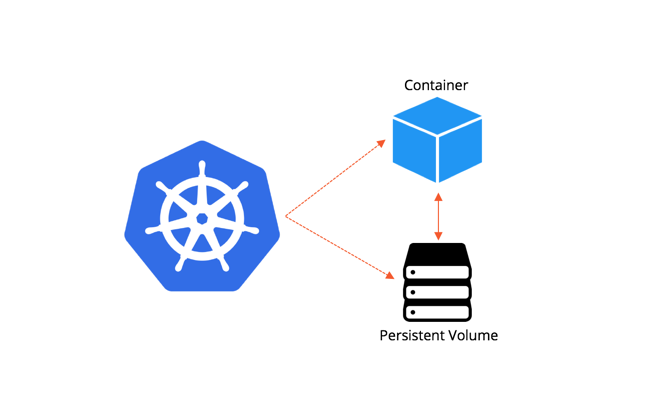
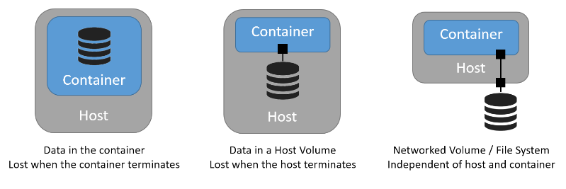
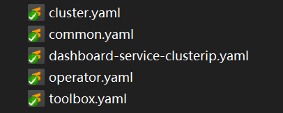
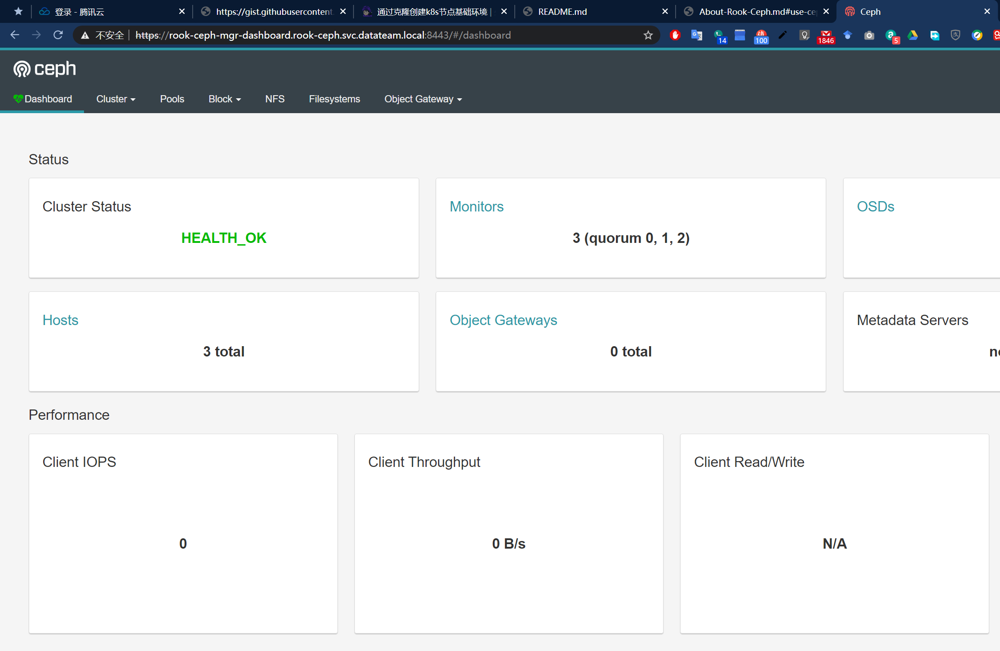

Rook Ceph
Why StatefulSets
So we all know there are several kinds of workloads controller in Kubernetes including Deployments, StatufulSets, DaemonSet – these three kinds are mostly common-used.^1
When we deploy stateful App in Kubernetes, we have to concern about that where is the storage. In the very basic way, it is located within the container, which means the when the Pod is gone, the storage is gone.
Take a glance at the picture below.

A StatefulSets is for us to deploy Apps which have persistence requirement to storage, which typically is like most of the cluster type Apps(e.g. database, cache, registry in microservices).

The picture above explained why persistent storage is needed.
About Kubernetes and Ceph
Ceph
Ceph is an open-source distributed object, block, and file storage.^2
Today’s workloads and infrastructure require different data access methods (object, block, file) and Ceph supports all of them.
It is designed to be scalable and to have no single point of failure. It is open source software that runs on commodity, readily-available, hardware.
Compatibility of Kubernetes with Ceph
Kubernetes supports CephFS and CephRBD as StorageClass provioner.^3
While using CephFS as backend of PV(PersistentVolume), it is needed to have external provisioner installed.
Use Rook to Install Ceph
About Operator
While running complicated Apps, one of the best practice is to run an Operator.^5
In short, an Operator is a combination of Custom Resources^7 and Controller^8.
Many middleware cloud provider has maintaining there own official Operator for Kubernetes, such as Elastisearch, MongoDB, TiDB.
If you want to deploy a new stateful App in Kubernetes, start from looking for if an available Operator exists. Some useful collection links as below.
About Rook
Rook is an open source cloud-native storage orchestrator for Kubernetes, providing the platform, framework, and support for a diverse set of storage solutions to natively integrate with cloud-native environments.^4
At this stage, support for Ceph on Rook is already stable,^6 we can use it to manage Ceph cluster deployed in Kubernetes. And use it to provide persistent volume to afford StatefulSets Apps.
Install steps of Rook
At the moment the latest release version of Rook is “release-1.2”.
Go to the Githup repository of Rook, find ceph’s manifest example.
I have put the configured files in our repository, link: rook manifest

Deploy Rook Operator
Apply the manifest.
$ kubectl apply -f common.yaml
$ kubectl apply -f operator.yamlThen watch status of Pod.
$ kubectl get pod -n rook-cephCreate Ceph cluster
Now Rook Operator is running so we can continue to create Ceph cluster.
Some customized configuration
Here are some places I’ve configured in cluster.yaml.
.spec.placementTo use
AffinityandTolerationto specify dedicated Nodes for deploying Ceph Cluster.placement: all: nodeAffinity: requiredDuringSchedulingIgnoredDuringExecution: nodeSelectorTerms: - matchExpressions: - key: role operator: In values: - storage-node podAffinity: podAntiAffinity: tolerations: - key: storage-node operator: ExistsAlso, we need to add some Nodes into Kubernetes cluster, and
labelandtaintthem right.$ kubectl get nodes -l role=storage-node NAME STATUS ROLES AGE VERSION datateam-rookceph-01 Ready <none> 7d5h v1.17.1 datateam-rookceph-02 Ready <none> 7d5h v1.17.1 datateam-rookceph-03 Ready <none> 7d5h v1.17.1$ kubectl get nodes -o go-template-file="${HOME}/go-template/kubectl_node_taint.tmpl" | sed -rn '1p;/rook/Ip' Node Taint datateam-rookceph-01 storage-node=<no value>:NoExecute datateam-rookceph-02 storage-node=<no value>:NoExecute datateam-rookceph-03 storage-node=<no value>:NoExecute.spec.dataDirHostPathThis is the host dir for Ceph cluster storage, make sure every Node which is used to deploy Ceph has this directory.
dataDirHostPath: /data/rook_data.spec.storage.directoriesThis is the path for Ceph OSD storage.
storage: directories: - path: /data/rook_data/filestore
Sample output
$ kubectl apply -f cluster.yamlSample output after deploying Ceph cluster.
$ kubectl get pods -n rook-ceph
NAME READY STATUS RESTARTS AGE
csi-cephfsplugin-9bcdd 3/3 Running 0 6d19h
csi-cephfsplugin-jgkjx 3/3 Running 0 6d19h
csi-cephfsplugin-provisioner-7c75f6bf94-k4h4c 5/5 Running 0 6d19h
csi-cephfsplugin-provisioner-7c75f6bf94-s9p5m 5/5 Running 0 6d19h
csi-rbdplugin-ccw6t 3/3 Running 0 6d19h
csi-rbdplugin-jz5kh 3/3 Running 0 6d19h
csi-rbdplugin-provisioner-7954c9db75-jvjh7 6/6 Running 0 6d19h
csi-rbdplugin-provisioner-7954c9db75-wv56c 6/6 Running 0 6d19h
rook-ceph-crashcollector-datateam-rookceph-01-5c489fbc7b-246vr 1/1 Running 0 7d
rook-ceph-crashcollector-datateam-rookceph-02-7b459d4f69-t7wdq 1/1 Running 0 7d
rook-ceph-crashcollector-datateam-rookceph-03-5d7578fdd6-lv9br 1/1 Running 0 7d
rook-ceph-mgr-a-5d4765dfb-p4tfr 1/1 Running 0 7d
rook-ceph-mon-a-6864d58cc7-8qtst 1/1 Running 0 7d
rook-ceph-mon-b-65fbf9b96c-v9llx 1/1 Running 0 7d
rook-ceph-mon-c-54984d88b6-kxxc9 1/1 Running 0 7d
rook-ceph-operator-648d574f5c-bw6cz 1/1 Running 0 6d19h
rook-ceph-osd-0-6f966cc46b-n2trl 1/1 Running 0 7d
rook-ceph-osd-1-757cc69bc9-nd2ml 1/1 Running 0 7d
rook-ceph-osd-2-57b88cd98f-bvkw4 1/1 Running 0 7d
rook-ceph-osd-prepare-datateam-rookceph-01-tcfwp 0/1 Completed 0 6d19h
rook-ceph-osd-prepare-datateam-rookceph-02-mqg4w 0/1 Completed 0 6d19h
rook-ceph-osd-prepare-datateam-rookceph-03-bchr5 0/1 Completed 0 6d19h
rook-ceph-tools-6cb8fcc6f9-42p69 1/1 Running 0 6d19h
rook-discover-42h6t 1/1 Running 0 7d5h
rook-discover-tghgv 1/1 Running 0 7d5hUse Rook toolbox to verify Ceph cluster status
To verify status of Ceph cluster, we could use the Rook toolbox.
P.S. The image of Rook Ceph is based on CentOS, so we can use yum to install tools on-demand and rebuild the image.
kubectl apply -f toolbox.yamlAnd we can simply define a script to alias the ceph command.
# /etc/profile.d/ceph_profile_d.sh
alias ceph='kubectl -n rook-ceph exec -i $(kubectl -n rook-ceph get pod -l "app=rook-ceph-tools" -o jsonpath='{.items[0].metadata.name}') -- ceph'
alias rados='kubectl -n rook-ceph exec -i $(kubectl -n rook-ceph get pod -l "app=rook-ceph-tools" -o jsonpath='{.items[0].metadata.name}') -- rados'$ ceph status
cluster:
id: cf4fa4d1-0d37-44bd-8cb1-53d7304b233c
health: HEALTH_OK
services:
mon: 3 daemons, quorum a,b,c (age 7d)
mgr: a(active, since 6d)
osd: 3 osds: 3 up (since 7d), 3 in (since 7d)
data:
pools: 0 pools, 0 pgs
objects: 0 objects, 0 B
usage: 20 GiB used, 280 GiB / 300 GiB avail
pgs:$ ceph osd status
+----+----------------------+-------+-------+--------+---------+--------+---------+-----------+
| id | host | used | avail | wr ops | wr data | rd ops | rd data | state |
+----+----------------------+-------+-------+--------+---------+--------+---------+-----------+
| 0 | datateam-rookceph-02 | 6885M | 93.2G | 0 | 0 | 0 | 0 | exists,up |
| 1 | datateam-rookceph-03 | 6882M | 93.2G | 0 | 0 | 0 | 0 | exists,up |
| 2 | datateam-rookceph-01 | 6968M | 93.1G | 0 | 0 | 0 | 0 | exists,up |
+----+----------------------+-------+-------+--------+---------+--------+---------+-----------+$ ceph df
RAW STORAGE:
CLASS SIZE AVAIL USED RAW USED %RAW USED
hdd 300 GiB 280 GiB 20 GiB 20 GiB 6.75
TOTAL 300 GiB 280 GiB 20 GiB 20 GiB 6.75
POOLS:
POOL ID STORED OBJECTS USED %USED MAX AVAIL$ rados df
POOL_NAME USED OBJECTS CLONES COPIES MISSING_ON_PRIMARY UNFOUND DEGRADED RD_OPS RD WR_OPS WR USED COMPR UNDER COMPR
total_objects 0
total_used 20 GiB
total_avail 280 GiB
total_space 300 GiBUse Ceph Dashboard
In the cluster.yaml manifest, we could found .spec.dashboard config, defaultly enabled.
Let’s find the Service name of defaultly deployed Ceph Dashboard.
First we could deploy a busybox container in whichever Namespace and use nslookup to find out the FQDN of any service.
As below, we can see the cluster domain is datateam.local.
$ kubectl exec -ti busybox -- nslookup kubernetes
Server: 10.210.0.10
Address: 10.210.0.10#53
Name: kubernetes.default.svc.datateam.local
Address: 10.210.0.1Then we find the service name of Ceph Dashboard.
As below, it’s rook-ceph-mgr-dashboard.
$ kubectl get service -n rook-ceph
NAME TYPE CLUSTER-IP EXTERNAL-IP PORT(S) AGE
csi-cephfsplugin-metrics ClusterIP 10.210.0.62 <none> 8080/TCP,8081/TCP 7d1h
csi-rbdplugin-metrics ClusterIP 10.210.0.196 <none> 8080/TCP,8081/TCP 7d1h
rook-ceph-mgr ClusterIP 10.210.0.118 <none> 9283/TCP 7d1h
rook-ceph-mgr-dashboard ClusterIP 10.210.0.190 <none> 8443/TCP 7d1h
rook-ceph-mon-a ClusterIP 10.210.0.48 <none> 6789/TCP,3300/TCP 7d1h
rook-ceph-mon-b ClusterIP 10.210.0.223 <none> 6789/TCP,3300/TCP 7d1h
rook-ceph-mon-c ClusterIP 10.210.0.149 <none> 6789/TCP,3300/TCP 7d1hSo we can access Ceph Dashboard by this URL – https://rook-ceph-mgr-dashboard.rook-ceph.svc.datateam.local:8443.
By default, Rook will create a Configmap to store the admin user’s password.
$ kubectl -n rook-ceph get secret rook-ceph-dashboard-password -o jsonpath="{['data']['password']}" | base64 --decode && echo
D17j9zPi3RSample display as below.
